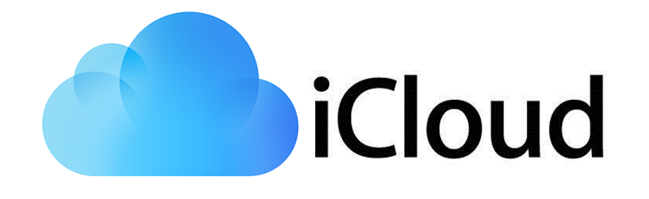

Cloud computing je nový výpočetní model založený na poskytování služeb a programů uložených na internetových serverech, k nimž mohou uživatelé přistupovat pomocí klientských aplikací (nejčastěji webového prohlížeče) a používat je prakticky odkudkoliv. V případě placených služeb uživatelé neplatí za vlastní software, ale za jeho užití. iCloud

Veřejný cloud je určen pro velký nebo neomezený počet klientů (např. Skype, Seznam), zatímco privátní cloud
je k dispozici pro omezený počet zákazníků. Hybridní cloudy pak kombinují veřejný i privátní přístup,
navenek však nabízejí jednotné standardizované rozhraní.
Vedle každodenně používaných internetových služeb, jakými jsou internetové vyhledávače (Google, Bing,
Seznam), webmail servery (Gmail, Hotmail, Seznam) nebo cloudová úložiště (OneDrive, GoogleDrive, iCloud,
Dropbox, Uložto), může být cloud využit pro distribuované výpočty (Cloud Skype), provozování běžných
uživatelských aplikací (Google Apps, Microsoft Office365, Adobe Creative Cloud), ale i pro systémy přístupné
přes prohlížeče (eyeOS).
Podle obsahu i způsobu nabídky cloudové služby rozlišujeme tyto modely:
IaaS (Infrastructure as a Service - infrastruktura jako služba). Poskytovatel služeb nabízí klientům celou
infrastrukturu, typicky virtuální stroje. Hlavní výhodou tohoto přístupu je, že se o veškeré problémy s
hardwarem stará poskytovatel. Příkladem jsou Amazon EC2, Rackspace Cloud nebo Microsoft Azure.
PaaS (Platform as a Service - platforma jako služba). V tomto modelu jsou poskytovány kompletní prostředky
pro podporu celého životního cyklu tvorby a distribuce webových. Toto řešení, vhodné pro vývojáře, zahrnuje
různé prostředky pro vývoj aplikace (IDE, API), ale i pro její údržbu. Příkladem poskytovatelů PaaS jsou
Google App Engine, Force.com nebo Heroku.
SaaS (Software as a Service - software jako služba). Aplikace je licencována jako služba pronajímaná
uživateli a přístupná odkudkoliv a kdykoliv. Příkladem může být známá sada aplikací Google Apps nebo v
logistice známý systém Cargopass